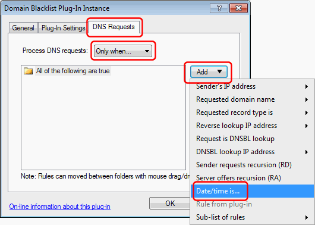

---
title: How to schedule plug-ins to take effect at specific times
category: 8
frontpage: false
comments: true
refs: 110
created-utc: 2019-01-01
modified-utc: 2019-01-01
---
The following describes how to make a plug-in take effect only at specific times with Simple DNS Plus v. 5.2 and later.
This can be used for example if you only want to limit Internet access during working hours (using a Domain Blacklist or similar), but can be used with any plug-in.
In the plug-in instance dialog, select the "DNS Requests" tab, in the "Process DNS requests" dropdown select "Only when...", click the "Add" button, select "Date/time is":

In the "DNS request access rule" dialog, specify when DNS requests should be processed by the plug-in:

NOTE: Operating systems and Internet browsers cache DNS records, so if a user recently accessed or was blocked from accessing a web-site, this information might be cached locally on her computer for some time. You may need to restart all browser instances and type "ipconfig /flushdns" at a command prompt on the local computer before it will query the DNS server again for an updated result.
When scheduling plug-ins (as above) and users may get different DNS results at different times, we recommend that you configure Simple DNS Plus to limit client caching to 20 minutes or less. See Options dialog / DNS / Miscellaneous section: